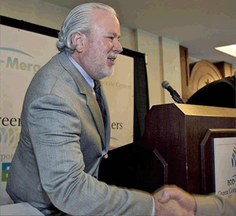

Company & Business History
This third-generation Texas based corporation was founded by Charles (Charlie) B. Carpenter, and joined by his son James (Jim) in 1971. Stephen Carpenter joined the company in 2003, becoming its President in 2012. Charlie retired from the firm in 2007 but continues as counsel emeritus. Carpenter & Associates, Inc.’s (C&A) continuing history includes state-wide development, construction and investment activities, real estate brokerage, investment syndication, asset management, community redevelopment, private and municipal infrastructure development. The company’s specific focus is to develop projects that stimulate economic, social, and community development and redevelopment. Carpenter & Associates’ long-standing business philosophy and principle - “Do something worthy, do it the right way, profit the community first, and your reward will follow.”
During the 1970’s, C&A expanded its property development, management and brokerage activities, with offices in Austin, San Antonio, South Texas, and the Rio Grande Valley. Charlie focused on the acquisition and development, leasing and operations of three regional shopping malls totaling more than 750,000 sq.ft. and numerous Safeway and other grocery and drugstore anchored neighborhood retail centers throughout the state. Jim flew the company planes and learned the development, construction, leasing, and brokerage businesses from the master. On the brokerage and investment syndication front, C&A conducted acquisitions, new construction, and management of more than 8,000 apartment units, extensive retail and office projects and thousands of acres of land assemblages across Texas. C&A directed focused roadway, utility and development entitlement planning efforts to assist communities with organized growth plans while enhancing its projects and land holdings. Most of these ventures were developed or sold to other development companies and the company sold its apartment portfolio in the late 1970’s.
In 1980, C&A redirected its efforts focusing on strategic urban and master-planned community land assemblages and developments and conducted extensive office and retail acquisitions. Carpenter & Associates’ legacy project was its private efforts to revitalize and redevelop a five city-block area of Austin’s Central Business District, to create a new “gateway” to downtown Austin and the Texas State Capitol corridor on Congress Avenue along Town (Lady Bird) Lake. C&A also intensified its extensive state-wide commercial brokerage activities, turning in $200-$250m in annual sales in the Austin market.
Carpenter & Associates initiated and funded a 4,000+acre strategic land assemblage east of Austin, in its preferred growth corridor that lacks the environmentally sensitive features and species found west of Austin. The east region’s historical underdevelopment was due to the absence of municipal water supplies, utility and transportation infrastructures, services, planning, and the failures of municipal governments to expend the funding and resources necessary to develop and promote this “goldmine” frontier. This region offered abundant cheap, developable land that could support affordably priced housing, business sites and job growth and could efficiently and profitably be served with new utility and roadway infrastructures by the City of Austin. However, Austin leaders were focused on expending its limited resources to consolidate, develop, and control the public infrastructures west of the city in an attempt to limit growth in that area. C&A privately organized and challenged major landowners east of Austin, its area political leaders, and taxing districts to cooperate under a new non-profit regional planning entity that established its own area Chamber of Commerce; the Northeast Association (NEA). C&A provided the initial funding that was matched by other major landowners and was contributed to by individual and public members in this 260 square mile region. The Applied Materials research, development and manufacturing plant was the NEA’s first major new employer and new tax base success story, with Samsung, UPS and other major employers following.
In 1984, C&A privately discovered, engineered, constructed and operated the production of new regional water supplies from its own privately developed and funded water wells, and associated transmission, and storage facilities, transporting water 8.5 miles north to the City of Manor and the U.S. Highway 290 East corridor. This privately funded effort provided Manor with its first-ever State approved municipal water supply and established C&A’s development prominence over the area. C&A continued its expansion and privatization of municipal utility systems and services, including recruiting other private utility developers to the area. C&A then partnered with the City of Manor in a comprehensive public/private effort to master plan, establish new enabling zoning, subdivision, platting, and building code ordinances to revitalize, grow and prosper the City of Manor, the community and school district. They recruited new financial parnters then master-planned a new mixed-use residential community development anchored by a signature golfcourse, and waterpark. These regional planning efforts and private investments led Manor’s growth from the 1,000 residents it had maintained for more than 120 years, to its current population of 6,000. C&A pioneered development east of Austin making its mark on over 10,000 acres and that figure continues to grow today with a number of other projects in the assemblage, acquisition and entitlement phases.
The Carpenter family and its various companies, ventures and partnerships have actively acquired, developed, owned and brokered billions of dollars of real estate investments statewide for over 40-years. Today, this third-generation company has down-sized and turned its focus to “recession resistant”, market-control projects that represent significant economic and employment growth for the communities east of Austin and the entire central Texas region. The following information includes a few of the more prominent acquisitions, developments, or transactions conducted by the Carpenter enterprises.
Jim Carpenter | CEO
Jim began his real estate career while in high school, joining his father at Carpenter and Associates, Inc. He became the company pilot, established a research and marketing division, and conducted brokerage and syndication activities while graduating from the University of Texas at Austin in 1976, with a BBA in Finance, and Minor in Real Estate from the School of Business. He became President of the firm in 1978 and is primarily engaged in real estate development and investment activities. Jim manages several real estate companies, partnerships and development ventures. He is a licensed Texas Real Estate Broker, member of the National, Texas and Austin Board of Realtors, The Real Estate Council of Austin, the Austin Commercial Real Estate Society, and a member of the Chancellor’s Council for the University of Texas at Austin.
Stephen Carpenter | President
Stephen also began his real estate career while in high school, joining his grandfather and father at Carpenter & Associates, Inc. He specializes in information technology support, website development and management. He is an accomplished IT professional, programmer, Java software and IPhone developer and has conducted contract development and support for a number of other companies including Tier II Technical support & QA Engineer for HomeAway, Inc. Stephen graduated from Austin College in Sherman, Texas with a Bachelor Arts Degree in Computer Science and Business Administration, was the President of the Sigma Tau Epsilon Fraternity all while managing to establish himself as the leading goal scorer in Austin College Men's Soccer history. He is a licensed Texas Real Estate Broker and has assisted in the acquisition or sale of more than $100,000,000 of properties since 2003.
| Carpenter & Associates, Inc. 12400 Highway 71 West Suite 350-115 Austin, Texas 78738 (512) 306-9993 |